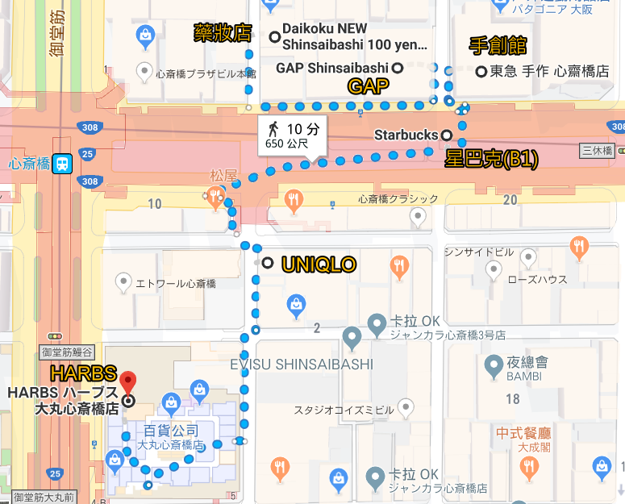
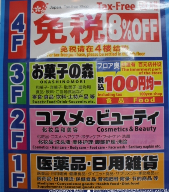
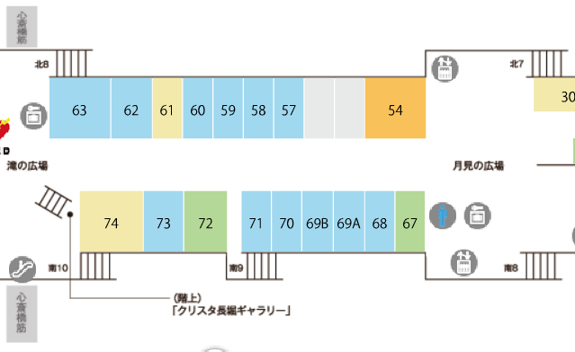
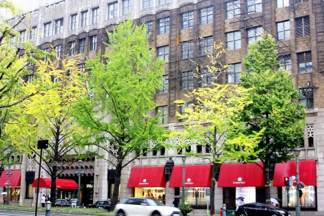
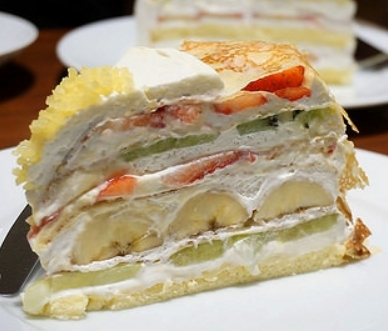

(藥妝店→GAP→手創館→UNIQLO)
示意圖

大國藥妝店 [官網]
營業時間：8:00~22:30

星巴克 クリスタ長堀店 [官網]
營業時間：7:00~22:00
位於54號處, 北7出口附近

GAP專賣店 心齋橋店 [官網]
營業時間：10:00~22:00
東急手創館 心齋橋店 [官網]
營業時間：10:00~21:00
UNIQLO 心齋橋店 [官網]
營業時間：11:00~21:00
其他備案: HARBS 大丸心齋橋店 [官網] 在北館3F
營業時間：10:00~20:30(最後點餐20:00)
在3F

水果千層派 780
